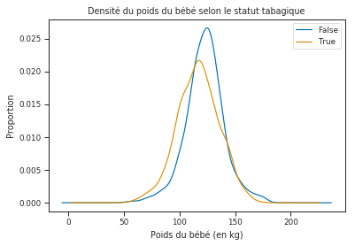
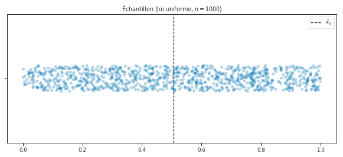
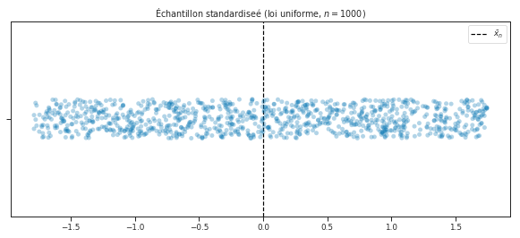
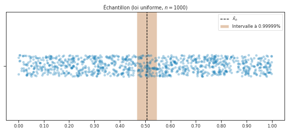
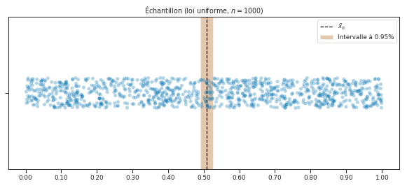

import platform
import sys
from download import download
import numpy as np
import pandas as pd
import matplotlib.pyplot as plt
import seaborn as sns
from ipywidgets import interact # widget manipulation
from scipy.special import comb, binom
from scipy.stats import normHLMA 408: Échantillonage aléatoire
Auteur: Joseph Salmon joseph.salmon@umontpellier.fr
Introduction et présentation
Import des packages usuels:
Commande “magique” pour un affichage plus avancé en Jupyter:
%matplotlib inlinePréparation pour l’affichage graphique et sauvegarder les images:
# saving tools for the course:
sns.set_context("paper", font_scale=1)
sns.set_style("ticks")
sns.set_palette("colorblind")
# colors
brown = (0.64, 0.16, 0.16)
purple = (148. / 255, 0, 211. / 255)
dirname = "../prebuiltimages/"
imageformat = ".pdf"Grossesses et cigarettes, impact sur la santé du nouveau né
Description des données:
“This dataset is found from http://www.stat.berkeley.edu/users/statlabs/labs.html. It accompanies the excellent text Stat Labs: Mathematical Statistics through Applications Springer-Verlag (2001) by Deborah Nolan and Terry Speed.”
Plus de détails: https://www.stat.berkeley.edu/users/statlabs/papers/sample.pdf (notamment sur les biais de collectes des données…)
Téléchargement et import pour sauvegarder les données
# to use the default values of utils for instance
saving = True
path_target = "./utils.py"
url_shared_files = "http://josephsalmon.eu/enseignement/Montpellier/HLMA408/sharedcode/utils.py"
download(url_shared_files, path_target, replace=False)
from utils import my_saving_displayReplace is False and data exists, so doing nothing. Use replace==True to re-download the data.Téléchargement et import des données
url = "http://josephsalmon.eu/enseignement/datasets/babies23.data"
# url = "http://www.stat.berkeley.edu/users/statlabs/data/babies23.data" # backup url, without header.
path_target = "./babies23.data"
download(url, path_target, replace=False)Replace is False and data exists, so doing nothing. Use replace==True to re-download the data.'./babies23.data'Option de pandas et de pré-traitement:
# Preoprocessing: only run once or big trouble (think about it!)
is_preprocessing_done = 0 # init at 0,if greater don't redo it
pd.options.display.max_rows = 8 # set not to display to many lines in pandas
pd.set_option('precision', 0) # set to display number at precision 0 in pandasLecture de la base de données et constructions d’un dataframe:
df_babies = pd.read_csv("babies23.data", skiprows=38, sep='\s+') # \s+ : for hanlding spaces
df_babies.head(n=10) # df stands for Data Frame| id | pluralty | outcome | date | gestation | sex | wt | parity | race | age | ... | drace | dage | ded | dht | dwt | marital | inc | smoke | time | number | |
|---|---|---|---|---|---|---|---|---|---|---|---|---|---|---|---|---|---|---|---|---|---|
| 0 | 15 | 5 | 1 | 1411 | 284 | 1 | 120 | 1 | 8 | 27 | ... | 8 | 31 | 5 | 65 | 110 | 1 | 1 | 0 | 0 | 0 |
| 1 | 20 | 5 | 1 | 1499 | 282 | 1 | 113 | 2 | 0 | 33 | ... | 0 | 38 | 5 | 70 | 148 | 1 | 4 | 0 | 0 | 0 |
| 2 | 58 | 5 | 1 | 1576 | 279 | 1 | 128 | 1 | 0 | 28 | ... | 5 | 32 | 1 | 99 | 999 | 1 | 2 | 1 | 1 | 1 |
| 3 | 61 | 5 | 1 | 1504 | 999 | 1 | 123 | 2 | 0 | 36 | ... | 3 | 43 | 4 | 68 | 197 | 1 | 8 | 3 | 5 | 5 |
| ... | ... | ... | ... | ... | ... | ... | ... | ... | ... | ... | ... | ... | ... | ... | ... | ... | ... | ... | ... | ... | ... |
| 6 | 102 | 5 | 1 | 1449 | 244 | 1 | 138 | 4 | 7 | 33 | ... | 7 | 37 | 4 | 99 | 999 | 1 | 98 | 0 | 0 | 0 |
| 7 | 129 | 5 | 1 | 1562 | 245 | 1 | 132 | 2 | 7 | 23 | ... | 7 | 23 | 4 | 71 | 192 | 1 | 2 | 0 | 0 | 0 |
| 8 | 142 | 5 | 1 | 1408 | 289 | 1 | 120 | 3 | 0 | 25 | ... | 3 | 26 | 1 | 70 | 180 | 0 | 2 | 0 | 0 | 0 |
| 9 | 148 | 5 | 1 | 1568 | 299 | 1 | 143 | 3 | 0 | 30 | ... | 0 | 34 | 5 | 99 | 999 | 1 | 2 | 1 | 1 | 4 |
10 rows × 23 columns
Pré-traitement:
Lire l’entête du fichier pour comprendre tout ça… les unités, les données manquantes etc.
if is_preprocessing_done<1:
print("You have to do the pre-processing only once, to avoid unit issues")
# Remark: use inplace option to avoid useless copies for nans
df_babies['smoke'].replace(9, np.nan, inplace=True) # handle missing values
df_babies['smoke'].replace(0, False, inplace=True)
df_babies['smoke'].replace(1, True, inplace=True)
df_babies['smoke'].replace(2, True, inplace=True)
df_babies['smoke'].replace(3, True, inplace=True)
df_babies.dropna(inplace=True)
print("This is done only because {} < 1".format(is_preprocessing_done))
is_preprocessing_done +=1You have to do the pre-processing only once, to avoid unit issues
This is done only because 0 < 1Analyse du sexe de l’enfant
df_babies.head(20)| id | pluralty | outcome | date | gestation | sex | wt | parity | race | age | ... | drace | dage | ded | dht | dwt | marital | inc | smoke | time | number | |
|---|---|---|---|---|---|---|---|---|---|---|---|---|---|---|---|---|---|---|---|---|---|
| 0 | 15 | 5 | 1 | 1411 | 284 | 1 | 120 | 1 | 8 | 27 | ... | 8 | 31 | 5 | 65 | 110 | 1 | 1 | False | 0 | 0 |
| 1 | 20 | 5 | 1 | 1499 | 282 | 1 | 113 | 2 | 0 | 33 | ... | 0 | 38 | 5 | 70 | 148 | 1 | 4 | False | 0 | 0 |
| 2 | 58 | 5 | 1 | 1576 | 279 | 1 | 128 | 1 | 0 | 28 | ... | 5 | 32 | 1 | 99 | 999 | 1 | 2 | True | 1 | 1 |
| 3 | 61 | 5 | 1 | 1504 | 999 | 1 | 123 | 2 | 0 | 36 | ... | 3 | 43 | 4 | 68 | 197 | 1 | 8 | True | 5 | 5 |
| ... | ... | ... | ... | ... | ... | ... | ... | ... | ... | ... | ... | ... | ... | ... | ... | ... | ... | ... | ... | ... | ... |
| 16 | 207 | 5 | 1 | 1481 | 255 | 1 | 92 | 3 | 4 | 25 | ... | 7 | 28 | 1 | 99 | 999 | 1 | 1 | True | 1 | 5 |
| 17 | 217 | 5 | 1 | 1605 | 261 | 1 | 115 | 3 | 3 | 33 | ... | 3 | 33 | 2 | 70 | 140 | 1 | 4 | True | 1 | 5 |
| 18 | 239 | 5 | 1 | 1431 | 261 | 1 | 144 | 2 | 0 | 33 | ... | 5 | 35 | 4 | 99 | 999 | 1 | 7 | False | 0 | 0 |
| 19 | 240 | 5 | 1 | 1647 | 288 | 1 | 119 | 3 | 0 | 43 | ... | 0 | 45 | 2 | 73 | 195 | 1 | 5 | True | 1 | 6 |
20 rows × 23 columns
plt.figure(figsize=(6,4))
df_babies.groupby("smoke").wt.plot(kind='kde')
plt.legend()
plt.xlabel('Poids du bébé (en kg)')
plt.ylabel('Proportion')
plt.title("Densité du poids du bébé selon le statut tabagique")Text(0.5,1,'Densité du poids du bébé selon le statut tabagique')
smoke_by_type = df_babies.smoke.value_counts()
n_total = df_babies.smoke.count()
print("Il y a {} bébés dont on connait le statut tabagique de la mère".format(n_total))Il y a 1226 bébés dont on connait le statut tabagique de la mèresmoke_by_typeTrue 682
False 544
Name: smoke, dtype: int64smoke_ratio= smoke_by_type[True] / df_babies.smoke.count()print("La proportion de mères fumeuses est de {0:.2f} % dans la popultation totale.".format(smoke_ratio * 100))La proportion de mères fumeuses est de 55.63 % dans la popultation totale.Tirage aléatoire de n_samples échantillons (parmi les 1226)
n_samples = 91
# change the random_state value to get another random sample
# df_extract = df_babies.sample(n=n_samples, random_state=45)
df_extract = df_babies.sample(n=n_samples)
smoke_by_type_extract = df_extract.smoke.value_counts()
smoke_ratio_extract = smoke_by_type_extract[True] / df_extract.smoke.count()
print("La proportion de mères fumeuses est de {0:.2f} % dans la popultation extraite.".format(smoke_ratio_extract * 100))La proportion de mères fumeuses est de 52.75 % dans la popultation extraite.comb(n_total, n_samples, exact=True)27163361289825550523268206145916032768087536721887922928079532500193847739178087753157271974542740511341704937942015497847278125901041363840n_digits = sys.getsizeof(comb(n_total, n_samples, exact=True))print(r"Il y a environ 10^{2} façon de choisir {0} nombres parmi {1}".format(n_samples, n_total, n_digits))Il y a environ 10^88 façon de choisir 91 nombres parmi 1226Intervalle de confiance avec le TCL
n_samples = 1000
X = np.random.random(n_samples)
meanX = np.mean(X)
sdX = np.std(X)fig = plt.figure(figsize=(10,4))
ax = sns.stripplot(x=X,alpha=0.3,jitter = 0.1, size=10, marker=".")
plt.title(r"Échantillon (loi uniforme, $n ={0}$)".format(n_samples))
plt.axvline(meanX, linestyle='--', color='k', label="$\\bar{x}_n$")
plt.legend()
plt.show()
Z = (X - meanX) / sdXfig = plt.figure(figsize=(10,4))
ax = sns.stripplot(x=Z,alpha=0.3,jitter = 0.1, size=10, marker=".")
plt.title(r"Échantillon standardiseé (loi uniforme, $n ={0}$)".format(n_samples))
plt.axvline(0, linestyle='--', color='k', label="$\\bar{x}_n$")
plt.legend()
plt.show()
alpha = 0.00001
c = norm.ppf(1- alpha/ 2)
IC = np.array([meanX - c * sdX / np.sqrt(n_samples), meanX + c * sdX / np.sqrt(n_samples)])IC, meanX, c(array([0.46672845, 0.54562877]), 0.5061786072452197, 4.417173413467605)from matplotlib.ticker import StrMethodFormatter
fig = plt.figure(figsize=(10, 4))
p = plt.axvspan(IC[0], IC[1], facecolor=sns.color_palette()[
5], alpha=0.5, label="Intervalle à {}%".format(1-alpha))
ax = sns.stripplot(x=X, alpha=0.3, jitter=0.1, size=10, marker=".")
plt.title(r"Échantillon (loi uniforme, $n ={0}$)".format(n_samples))
plt.axvline(meanX, linestyle='--', color='k', label="$\\bar{x}_n$")
bottom, top = plt.ylim()
xtixcks_val = np.arange(0, 1.1, 0.1)
plt.xticks(xtixcks_val, xtixcks_val)
plt.gca().xaxis.set_major_formatter(StrMethodFormatter('{x:,.2f}')) # 2 decimal places
plt.legend()
plt.show()
my_saving_display(fig, dirname,
"jitter_IC_TCL", imageformat, saving=saving)
def IC_by_TCL(alpha=0.05, n_samples=1000):
X = np.random.random(n_samples)
meanX = np.mean(X)
sdX = np.std(X)
Z = (X - meanX) / sdX
c = norm.ppf(1 - alpha / 2)
IC = np.array([meanX - c * sdX / np.sqrt(n_samples),
meanX + c * sdX / np.sqrt(n_samples)])
fig = plt.figure(figsize=(10, 4))
p = plt.axvspan(IC[0], IC[1], facecolor=sns.color_palette()[
5], alpha=0.5, label="Intervalle à {}%".format(1 - alpha))
ax = sns.stripplot(x=X, alpha=0.3, jitter=0.1, size=10, marker=".")
plt.title(r"Échantillon (loi uniforme, $n ={0}$)".format(n_samples))
plt.axvline(meanX, linestyle='--', color='k', label="$\\bar{x}_n$")
bottom, top = plt.ylim()
xtixcks_val = np.arange(0, 1.1, 0.1)
plt.xticks(xtixcks_val, xtixcks_val)
plt.gca().xaxis.set_major_formatter(
StrMethodFormatter('{x:,.2f}')) # 2 decimal places
plt.legend()
plt.show()Visualiseur de l’impact de \alpha et de n sur les IC du TCL
interact(IC_by_TCL, alpha=(0.001, .999, 0.001),n_samples=(100,2000,100)) # change the first and second value to check more quantiles 
# np.shape(np.where(np.logical_and(X>=IC[0], X<=IC[1])))[1]On répète la création de la statisque sur 500 tirages d’échantillons de taille 1000:
is_IC_has_param = 0 # before starting no IC contains the true parameter
n_repetition = 500
for i in range(n_repetition):
n_samples = 1000
X = np.random.random(n_samples)
meanX = np.mean(X)
sdX = np.std(X)
Z = (X - meanX) / sdX
alpha = 0.04
c = norm.ppf(1- alpha/ 2)
IC = np.array([meanX - c * sdX / np.sqrt(n_samples), meanX + c * sdX / np.sqrt(n_samples)])
if (IC[0]<0.5) and (IC[1]>0.5):
is_IC_has_param += 1
# else:
# print(IC)
"Proportion de fois que l'échantiollon contient le vrai paramètre (=espérance): {}".format(is_IC_has_param/n_repetition)"Proportion de fois que l'échantiollon contient le vrai paramètre (=espérance): 0.96"